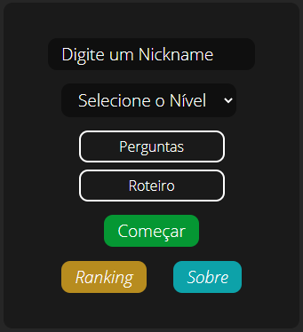
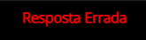

Sobre
Voltar
Como funciona o Site?
Essa é nossa tela de entrada do site
1) Coloque um Nickname assim ele sera usado para reconhecer a sua situação no Ranking
2) Selecione o tipo que pode estar entre
😀 Muito Fácil 😁 Fácil
😋 Médio
😎 Difícil 😡 Muito Difícil
Cada um deles tendo assim sua dificuldades
3) Selecione o tipo perguntas onde se fara perguntas em sequência criando assim uma lógica para um lógica final ou Roteiro onde estarão todos os conteúdos juntos
4) E agora só aperta para começar e ser desafiado
Como funciona o sistema dentro do game?
É bem simples só tendo três botões

1) Clique em responder para aparecer um campo onde você deve digitar a resposta em minusculo para que ela seja validada e depois clique em verificar caso certo você mudara para outra pagina caso errado aparecera em cima dos enigmas uma mensagem assim
2) Clique no botão, dica e assim aparecera dicas com numerações que podem lhe ajudar na hora de resolver os engimas mais é clara cada dica vale -5 pontos no placar do jogo no modo pergunta e repostas e no modo roteiro -10 pontos
3) Clique não botão não sei para pular a questão, porém não ganha pontos e nem perde em caso de aperta não sei em todas as questões você poderá zerar o jogo e assim não indo para o ranking
AVISO:
Caso tenha clicado em NÃO SEI não podera voltar para pagina anterior
E quando vou saber que terminei?
No final de cada game aparecerar uma teal como essa indicando assim seu nome de jogador seu nivel feito onde foi feito e sua pontuação